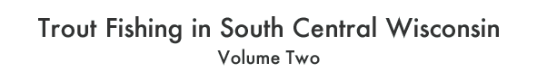
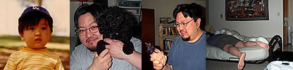

Home Designs Trout Fishing in South Central Wisconsin Volume 2
 |
|||||
| |
 This is the second volume of my weblog. The first volume can be found here. (Here's a vastly more complete about page.) For earlier entries, check out the Dear God Damn Diary archives, or my other former journal, After Hours. As for current stuff, I also post fairly regularly at my LiveJournal, Polka Boy Enjoys Dairy Products (Baked Goods As Well). That's where I record most of my day to day, what-I-ate-for-breakfast type happenings. Being a deep, spiritual type of guy, I also have an ongoing project, The Holy Bible (Prodigal Son Edition), where I've been copying the Bible, book by book, in my own words, as a sort of spiritual exercise. For the record, although I can't say right now that I'm officially joined to any church, I've been attending a Quaker meeting for the past couple of months, and will most likely apply for membership in the near future. For those interested in witnessing my gradual meltdown as a would-be novelist, check out my bad-novel-in-progress, Dark Penguin. I began it as a way to break through my writer's block, by writing a novel with minimal attention to quality or narrative coherence. It might be crappy, or it might be okay — I'm just trying to churn it out as quickly as I can. Two other sites: my DVD Verdict weblog, where I post infrequently about things DVD/film related (I'm a reviewer for that site); and Lefty, a political weblog at which I'm an extremely infrequent guest blogger (I've been trying to avoid ranting about politics). I've decided not to keep a blogroll on the current version of my weblog, but you can see my Bloglines list o' reads here. It's impossible to keep up with everything that's going on in my little corner of the wide world o'blogs, but these are links to a few of the weblogs/journals I read most often: Moesmum Notes of Chaos It Would Cost You a Groaning to Take Off My Edge A Girl Named Bob Amblus For Myself and Strangers Ground Control Groovebunny Little Man Clan Angry Asian Man Xkot Tundrababe Feeling is Mutual Everything Sucks Return of the Reluctant Ordinary Morning Mandelion Kermit the Blog Feministe Fireland What Am I Doing Here? Teach Me to Behave Mandelion A Running Commentary Bitch Has *Word* This Imploding Heart Mike Whybark Mr. Irresponsible's Bad Advice Aspects of Amber There's also a bunch of fine LJs I read from my friends list. All in all, a great way to fill up a truly astonishing amount of your spare time! |